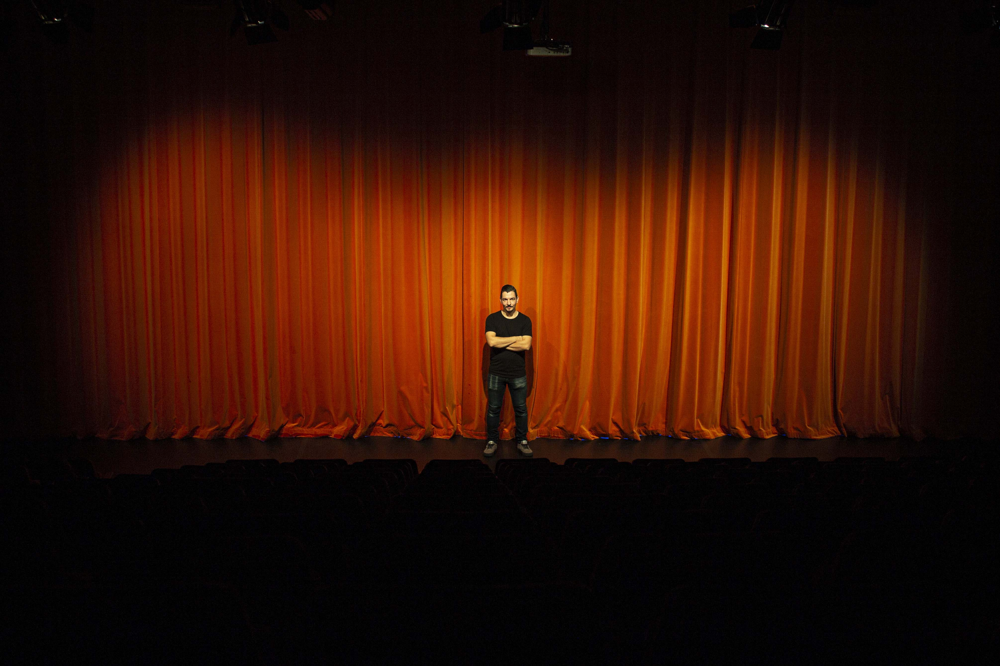

Social Posters
5min | 27-10-2020 | Jessica Smits
Na een jaar bloed, zweet en tranen, staat daar eindelijk de theatervoorstelling. Het daverende applaus gonst je nog na in de oren. Je hinkt langzaam terug naar de coulissen en kleed je snel om, zodat je gauw je familie en vrienden kan omhelzen. Wat een voorstelling!
Zo’n voorstelling zorgt voor een emotionele rollercoaster: adrenaline, stress, opluchting, ontroering en ga zo maar door. Je wilt natuurlijk dat iedereen naar jouw geweldige voorstelling komt kijken. Maar hoe doe je dat? Door te promoten op social media, fysieke posters of allebei?
Social media speelt tegenwoordig een grote rol bij alle soorten van adverteren, ook theaterstukken. In januari 2020 heeft 99% (17,01 miljoen) van de nederlanders een mobiele telefoon, waarvan 64% (11 miljoen) dagelijks actieve social media gebruikers zijn.
Het begin
We beginnen bij het begin. Goed poster design:
- schreeuwt
- informeert
- emotioneert
- organiseert
"Het moet duidelijk zijn waar het over gaat en de aandacht trekken"
vertelt Kaj Kelderman (persoonlijke communicatie, 28 oktober 2020). Hij is ooit begonnen met fotobewerking en vanuit daar geïnteresseerd geraakt in posterdesign. Hij werkt al sinds 10 jaar als geluidstechnicus voor het Cultuurhuis in Heerlen. Acht jaar geleden is hij ook de posters gaan maken. Dit doet hij meestal als de huidige designer geen tijd heeft.
‘We Can Do It!’
Kaj gebruikt voor het maken van de posters altijd een foto van de band of groep. Dit hoort bij de huisstijl van het Cultuurhuis. Als de foto te druk is voor de posters, maakt hij ze rustiger door de foto zwart/wit te maken met eventueel een kleurtint, zoals blauw. Hij maakt een bewuste keuze tussen kleur, zwart/wit of beide. Kleur is namelijk een manier om informatie of een gevoel over te brengen.
Tekst is een tweede manier. Een goed voorbeeld hiervan is de iconische ‘Uncle Sam’ poster. Het beeld op deze poster is niet onbelangrijk, de wijzende man roept een gevoel op van verantwoording, maar zonder de tekst zou je het beeld niet volledig hebben gesnapt. Doordat de poster tijdens beide wereldoorlogen is gebruikt kan je wel zeggen dat hij doeltreffend was.
Een ander voorbeeld waarin dit juist is omgedraaid, is de ‘We Can Do It!’ poster. Als de poster alleen uit de tekst ‘We Can Do It’ zou bestaan, zou je niet snel snappen waar het over gaat. Je legt de link, omdat je een vrouw ziet die haar mouwen oprolt. Een goede combi tussen kleur, beeld en tekst laat de poster leven.
Posters moeten niet alleen een gevoel overbrengen. Je wilt dat mensen iets gaan doen: kopen, inschrijven of informeren. Een zogenoemde: "call to action". Die zie je niet alleen op fysieke posters, maar ook online. Vaak in de vorm van een websitelink of een grote rode ‘buy’ knop, waarmee je met één klik op de website van de adverteerder staat.
101 manieren om te adverteren
In Nederland scrollen, posten en liken we gemiddeld iedere dag 1 uur en 19 minuten op social media. Op alle social media kanalen vind je reclame in verschillende soorten en maten. Van gezichtscrème tot fashion tot spelletjes, het houd niet op. Als je op Instagram scrolt kom je na 4-6 gewone berichten een advertentie tegen. Je kijkt er gauw overheen, maar onbewust blijft reclame altijd hangen
In de promotiegids van Instagram staan 101 manieren om te adverteren. Je kan kiezen wat je doelgroep is, hoeveel geld je wilt uitgeven en hoe lang je wilt adverteren. Instagram geeft zelfs aan dat je een advertentie het beste ‘natuurlijk’ uit kan laten zien zodat het meer op een ‘normaal bericht’ lijkt. "The medium is the message" zoals canadese filosoof Marshall McLuhan zei. De media bepaalt namelijk hoe we de wereld zien. We kunnen er gewoonweg niet meer omheen. Social media is deel van ons dagelijkse leven geworden. Of we de advertenties nu leuk vinden of niet, we zullen ze altijd terugzien op onze favoriete apps.
Hoge drukkosten
Als kleine lokale vereniging wil je groeien en meer naamsbekendheid krijgen binnen je regio. Bij Theaterwerkplaats Zie maken we zelf onze posters. We laten ze drukken en hangen ze op in het centrum van Heerlen. Daarnaast posten we de posters ook op onze social media pagina’s. Ons publiek bestaat uit: familie, vrienden en leden vanuit de andere theatergroepen. De posters die we ophangen lijken geen nieuw publiek te trekken.
Het Cultuurhuis is net zo’n organisatie. Kaj geeft aan dat ze alleen voor grote evenementen posters laten drukken. Alle overige evenementen delen ze dit gewoon op hun social media pagina's. Dit doen ze omdat de drukkosten erg hoog kunnen oplopen. Op social media kan je veel beter reguleren hoeveel je wilt uitgeven aan advertenties. Met als extra bonus de statistieken van je advertentie. Ik zou dus altijd meer de voorkeur geven aan het adverteren op social media, dan het drukken van posters.
Mijn emotionele rollercoaster
Poster design is een vak apart, met een paar vattende zinnen, kleuren of beelden moet je iemands aandacht trekken. Zelfs het lettertype kan hierin een wereld van verschil in maken. Daar zou ik een jaar geleden echt niet bij stilgestaan hebben. Maar het feit dat je iemand een bepaald gevoel kan meegeven door middel van design, vind ik nog het meest intrigerende aspect.
Design is ontzettend breed: je kan zoveel verschillende kanten uit! Daarom hoop ik de komende 4 jaar nog lekker overal van te kunnen 'snoepen'. Op dit moment liggen mijn interesses bij gamedesign en virtual reality (VR). We zullen zien waar het schip strandt. Als ik een ding heb geleerd in mijn 22-jarige bestaan op deze aardbol is dat je nooit weet wat morgen, overmorgen, een week of een jaar je zal brengen. Net zoals de voorstelling, zorgt het leven voor een emotionele rollercoaster, zowel online als offline.
Bronnen
Argent, P. (2016, 20 mei). Exploring the art of the theatre poster. Design Week.
https://www.designweek.co.uk/issues/16-22-may-2016/exploring-the-art-of-the-theatre-poster/
Armed Forces History, Division of History of Technology, & National Museum of American History.
(z.d.). The Price of Freedom: “I Want You” Poster. amhistory. Geraadpleegd 18 oktober 2020, van
https://amhistory.si.edu/militaryhistory/collection/object.asp?ID=548
Facebook. (z.d.). Promotiegids: aan de slag. Instagram. Geraadpleegd 18 oktober 2020, van
https://www.facebook.com/business/m/instagram-promotions/overview
Hemmings, F. W. J. (2006). The Theatre Industry in Nineteenth-Century France. Cambridge University Press.
Intelligent Online. (z.d.). Instagram adverteren kosten. Geraadpleegd 20 oktober 2020, van
https://intelligentonline.nl/instagram-adverteren-kosten/
Kemp, S. (2020, 18 februari). Digital 2020: The Netherlands. DataReportal – Global Digital Insights.
https://datareportal.com/reports/digital-2020-the-netherlands
Agency. (2018, 8 januar i). Theatre Poster Design & Why We’re Persisting With Print. Medium.
https://medium.com/@olgaagency/theatre-poster-design-why-were-persisting-with-print-42a70d824bfd